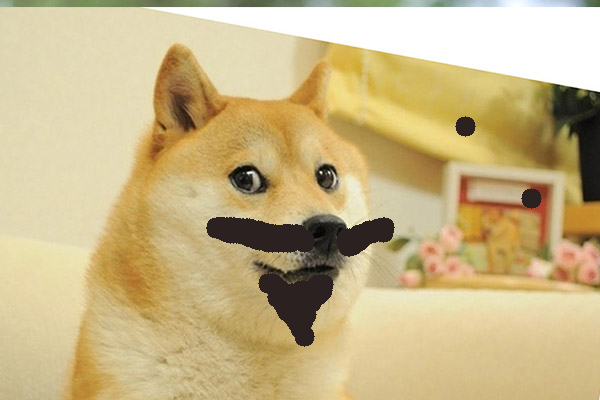
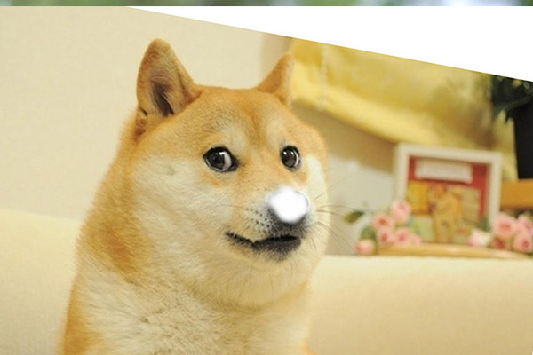
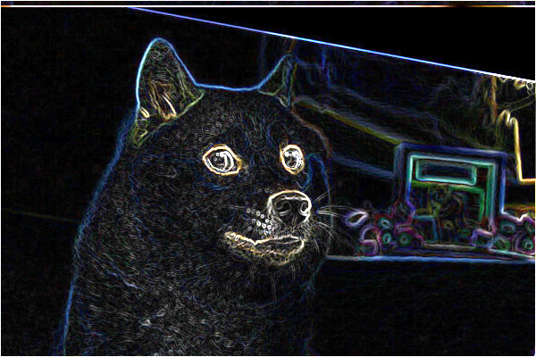

COS426 Assignment 0Warm-up — Batch Mode
Switch to: Interactive Editor
- (1.0) Fill
- (2.0) Brush
- (2.0) Soft Brush
- (1.0) Art Contest
Fill
The Fill function iterates over every pixel in the image,
treating the image as a 2D matrix of pixels. For each pixel,
it sets the color to the specified value.
This fills the entire image with a color.
You can include as many results as you want, but please at least include the following results:
Push_Image=flower.jpg&Fill=[0.142370997229,0.142509677694,0.764679664899,1]
![Push_Image=flower.jpg&Fill=[0.142370997229,0.142509677694,0.764679664899,1]](batch.html?Push_Image=flower.jpg&Fill=[0.142370997229,0.142509677694,0.764679664899,1]){kind=link}
Brush
The Brush function uses the stringToCoords to parse the vertsString parameter,
which contains the coordinates of the centers. For each center,
it iterates over the image and calculates the squared Euclidean distance from the current pixel to the center.
If the distance is within the radius, the pixel's color is updated.
This creates a solid circular color effect. The algorithm has a nested loop structure,
iterating over all pixels for each center.
You can include as many results as you want, but please at least include the following results:
Push_Image=flower.jpg&Brush=16;[0.0968858131488,0.0968858131488,0.705882352941,1];x222y165x303y160x266y234

Push_Image=town.jpg&Brush=10;[1,1,1,1];x475y83x304y100x135y187
![Push_Image=flower.jpg&Brush=16;[0.0968858131488,0.0968858131488,0.705882352941,1];x222y165x303y160x266y234](batch.html?Push_Image=flower.jpg&Brush=16;[0.0968858131488,0.0968858131488,0.705882352941,1];x222y165x303y160x266y234){kind=link}
![Push_Image=town.jpg&Brush=10;[1,1,1,1];x475y83x304y100x135y187](batch.html?Push_Image=town.jpg&Brush=10;[1,1,1,1];x475y83x304y100x135y187){kind=link}
Soft Brush
The Soft Brush filter is similar to the Brush filter but has opacity.
For each pixel in the radius, the opacity is calculated as a linear function of the distance from the center,
decreasing from alpha_at_center to 0. The new pixel color is merged with the existing pixel color using the calculated opacity.
This creates a gradient effect, where the brush goes out ot the edges and fades. The merging uses the formula: blendedColor = (1 - opacity) * existingColor + opacity * newColor.
You can include as many results as you want, but please at least include the following results:
Push_Image=flower.jpg&Soft_Brush=91;[1,1,1,1];1;x269y193

![Push_Image=flower.jpg&Soft_Brush=91;[1,1,1,1];1;x269y193](batch.html?Push_Image=flower.jpg&Soft_Brush=91;[1,1,1,1];1;x269y193){kind=link}
Art Contest
The custom filter implements an edge detection algorithm using the Sobel operator.
It applies two convolution matrices gx and gy to compute the gradient in the x and y directions for each pixel.
The magnitude of the gradient is calculated as sqrt(gx² + gy²) for each color channel, and the result is normalized to fit within the range [0, 1].
This highlights edges in the image by detecting areas of high intensity change.
The algorithm is computationally intensive.
For more details on the implementation, refer to my GitHub repository, which explains the algorithm step by step: GitHub Repository.
You can include as many results as you want, but please at least include the following results:
